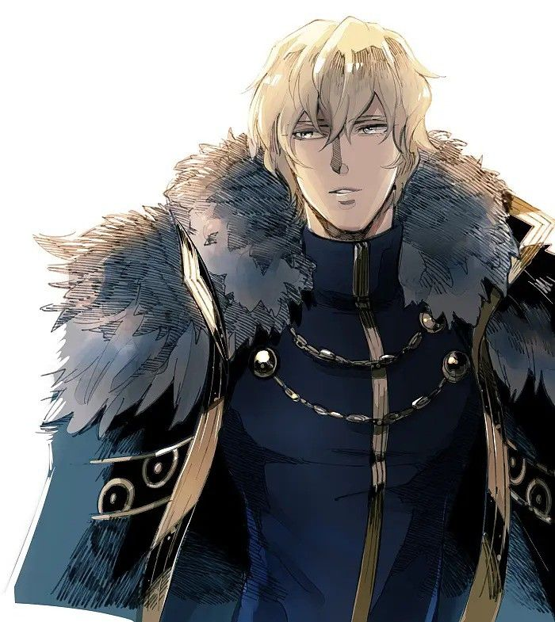

| Godfrey Greymane | The Shieldwarden Kharven, House Greymane as of the morning of the seven lines in the Hall of Verdicts |
| Epithet | The Shieldwarden, by title before name, as the house requires. The Stark long houses say the King’s Wall and add that the shield is the lesser half of it; the old men of the Stormfold still say Wystan’s lad, and mean it kindly |
| Concept | Hit him as hard as you like: he stays where he is, and the ground breaks instead of him. |
| Stat line | Stage IV Flourishing · Adept (Clouded) Level 170 · Refined, in Residual Strain, seventy past the gate · unclassed until Glory Body IV Mastered, unread below Glory · Fate III Walked 35%, unread · Lenses: home + 1 · yield (η) 0.45 |
| Combat grammar | Expenditure |
| Aura | color: Petralon’s heavy gray at Flourishing’s clarity, warm and dark, with Basilithe’s ochre only hinted, a fine grit of ridge-stone dust settling round his boots when he sets them |
| How he moves | Tall and long-limbed and never in a hurry. |
| Stack | sustainable 180 to 275 in Anchoring and Fortitude (275), Absorption (260), Fortification (240), Oath and Gravity (220), Stability (200) and Constitution (180) cap two steps on the hidden scale over the sustainable figure layers: STONEFAST when called |
| Bonded weapon | the Greymane shield, the ridge device on its face |
| Kit | a navy coat closed to the jaw under a double gold chain, a black and gold mantle with a gray wolf collar, a plain gray cloak with a ridge clasp, a short sword nobody remembers, and the piece people talk about first: the Very Rare Greymane shield on his back |
| Voice | ”Let them talk, sire. Let them say all of it. You can be in a hurry afterward.” speaker type: a career aide-de-camp who has learned to run a war by keeping a young king in his chair |
| Next gate | Stage V, Splintering Catalyst: surviving contact with an entity or force more than two full ranks above his ceiling holds at Level 101, which his 170 already passes: only the Catalyst is wanting, and past Level 100 without it he is in Residual Strain, seventy Levels deep |
I. Identity
| Field | Value |
|---|---|
| Full Name | Godfrey Greymane |
| Pronunciation | GOD-free GRAY-mane |
| Alias / Title | The Shieldwarden, by title before name, as the house requires · Spoil, The Butcher · Muken’s right hand |
Also Known As
| Name | Who says it |
|---|---|
| Wystan’s lad | the old men of the Stormfold |
| the King’s Wall | the Stark long houses |
| Field | Value |
|---|---|
| Race / Lineage | Human, Kharven northern stock · House Greymane of the Ridgewall, Shieldwardens of the western border |
| Age | Forty |
| Realm / Faction | Kharven; House Greymane, sworn to Muken Moto |
| School and sect rank | Greymane shield-training from the cradle Shieldwarden of the house since his father’s death |
Renown
| Among | What they say of him |
|---|---|
| the public | the Shieldwarden who stood at the woodpile beside the king |
| the army | the Greymane foot follow him in their long gray file without being told twice |
| the sects | none |
| the guilds | none |
| Field | Value |
|---|---|
| Note | epithet: the Shieldwarden |
| Catalyst Event | His father Wystan Greymane kneeling beside Ulf Stark on the black floor under the Kurenai blade, after swearing his son on the ridge to keep the secret of Muken’s blood |
| Refusal | He will not leave the post he was given, whatever is offered, for as long as there is a post to hold |
| Conviction | The ridge does not move; a man who stands so that nobody behind him has to is worth more than any man who wins |
| Arc kind | Flat: the steady point the others turn round |
II. Soul Architecture
| Field | Value |
|---|---|
| Level | 170; it holds Flourishing (30) and would hold Splintering (101), Glory (115) and Refraction (130); past 100 with no Catalyst to Splintering, Residual Strain is building in him, seventy Levels past the gate |
| Temperance Stage | IV, Flourishing · Adept |
| Path | Body IV Mastered · Fate III Walked 35%. The Body gate lets his Fortitude and Fortification climb; the Fate gate opens his Anchoring, Oath and Gravity. He has almost nothing in Spirit, and it shows only in what he does not try to read |
| Mastery | unread on both roads: Mastery is not read below Glory |
| Yield (η) | 0.45, what a hall expects of an Adept |
| Lenses | home Petralon + 1 held (Basilithe), harmonized early on a Clouded Crystal, past the Adept’s safe count of one |
| Soul Crystal | Clouded |
| Crystal State | Refined. A plain, even, well-kept Crystal, like a garrison wall that has been inspected every morning |
| Class | Unclassed until Glory |
III. Wellspring Harmonizations
| Wellspring | Folk name | Kind | Depth | What it bends in him | Note |
|---|---|---|---|---|---|
| Petralon | the Foundation Stone | Wild | deep, drawn through the ridge itself | the foundation’s office, the arch’s law | the foundation’s office: every load handed down through him into the ground, the slow settling accepted as the price of never cracking; masons know it as the arch’s law; it is the Wellspring under the Ridgewall, and the house has stood on it for generations |
| Basilithe | the Stone Will | Wild | held | one note held that nobody can retune, so no outside rhythm can drive him | his soul fixed on one note past any retuning; nothing rattles him, and the one rhythm that happens to sing his own note rattles him apart (the Measurewrights’ resonant catastrophe) |
IV. Primary Stats
| Primary | Total | Mean |
|---|---|---|
| Vitality | 855 | 106.875 |
| Ardency | 150 | 18.75 |
| Gnosis | 180 | 22.5 |
| Dexterity | 250 | 31.25 |
| Harmonics | 300 | 37.5 |
| Resilience | 905 | 113.125 |
| Tempering | 200 | 25 |
| Dominion (seven, Throne apart) | 410 | 58.57 |
| Throne | not opened | · |
| Field | Value |
|---|---|
| Pool | 3,250 |
| Unspent | 0 |
V. Sub-Stats
| Primary | ||||||||
|---|---|---|---|---|---|---|---|---|
| Vitality | Fortitude 275 | Absorption 260 | Constitution 180 | Hemostasis 5 | Regeneration 3 | Filtration 2 | Tolerance 80 | Threshold 50 |
| Ardency | Flux 40 | Alacrity 0 | Depth 0 | Penetration 20 | Compression 30 | Cascade 0 | Overchannel 0 | Density 60 |
| Gnosis | Perception 40 | Acuity 0 | Forecast 0 | Fluency 0 | Retention 0 | Analysis 60 | Cognition 30 | Vigilance 50 |
| Dexterity | Celerity 30 | Reflex 70 | Finesse 40 | Economy 60 | Evasion 0 | Grapple 40 | Feint 0 | Sequence 10 |
| Harmonics | Attunement 10 | Projection 0 | Breadth 0 | Stability 200 | Empathy 40 | Synergy 10 | Axis 40 | Suppression 0 |
| Resilience | Integrity 120 | Ward 5 | Persistence 10 | Anchoring 275 | Fortification 240 | Hardening 30 | Oath 220 | Continuity 5 |
| Tempering | Clarity 20 | Overflow 0 | Maturity 60 | Coherence 60 | Yield 40 | Ceiling 0 | Capacity 10 | Longevity 10 |
| Dominion | Radius 40 | Sovereignty 5 | Sense 20 | Gravity 220 | Pressure 80 | Command 40 | Fate 5 | Throne not opened |
Field
Note
Value
A wall’s sheet. The assessor reads a middling sheet; the fight is decided by Anchoring 275, Fortitude 275 and Absorption 260, with Fortification, Gravity, Oath and Stability behind them. Evasion 0 is a choice the house makes for its sons: a Greymane does not step aside.
VI. Force of Hand
| Measure | Figure | Feat | Carried by | Note |
|---|---|---|---|---|
| Strike Force | Flux 40, Penetration 20 | — | Flux and Penetration | he does not win by hitting. The shield-bash of THE RIDGE GIVES BACK reaches the 176 to 275 step on the hidden scale on the ground’s return |
| Lifting | Fortitude 275 | hundreds of thousands of tonnes held still against the slope | Fortitude | — |
| Durability | Fortitude 275, Absorption 260, and more while his feet are set | — | Fortitude and Absorption | — |
| Travel speed | Celerity 30 | — | Celerity 30 | — |
| Reaction | Reflex 70 | 15 to 40 ms | Reflex 70 | quick enough to square the shield, never quick enough to dodge, which he never tries |
VII. Aether Flow
| Measure | Figure | Note |
|---|---|---|
| EU Reserve | 396,497 EU | — |
| Flux Density | 6,000 EU/g | — |
| AU/s | 2,700 | — |
| From full | empties in 2 minutes 27 seconds at full output, Starvation at 2 minutes 12 seconds | a wall is built to stand a long time on a little, and he rarely opens past a fifth |
| Recovery | ten percent a minute at rest; faster on the Ridgewall’s own stone, where Petralon runs under the floor | — |
VIII. Traits
Full accounts: Godfrey Greymane — Abilities
Below Glory his Mastery is unread, and every Trait works at its base.
| Trait | Kind | Source | Path and Form | Gates | What it does | Limit | Tell | Cost | Counter | Numbers |
|---|---|---|---|---|---|---|---|---|---|---|
| THE RIDGE DOES NOT MOVE | Primary Trait; the house words | — | Path Body · Lens Petralon · Form Shape | Fortitude and Fortification on the Body side, Anchoring on the Fate side | Feet set on solid ground, and nothing that comes into him pushes him back. The blow goes down through him and the floor cracks in a ring round his boots. | The footing: loose snow, ice, mud, open water, a ship’s deck, a moving cart, a high stair, anything that is not one with the ground beneath, gives the load nowhere to go but him. And the law routes a load without strengthening the floor: a blow far past what the ground under him can bear breaks the ground, and with the footing gone the path is gone with it. | His heels sink and dust settles round his feet. | He cannot move while it holds; a set foot is a planted foot, and lifting it drops the law. | Written in the Wellspring’s own failure: never push the Shieldwarden. Pull him, lift him, or fight him on the ice. | Constant and nearly free while his feet are set. |
| THE SWORN WARD | Secondary Trait | — | Path Fate, Walked: a bond and an oath, landing through the Body · Lens Petralon · Form Bind | Oath, which his Fate Path opened | a blow aimed at the king lands on Godfrey instead, and the king feels a shove | He can hold one ward, and the ward is Muken. The reach of a long stride, and the need to have his feet set. | His eyes go to the ward an instant before any blow lands. | The full hit, landing on a body that may not be braced for it, and about 1.5% of his reserve on top for every catch. | Two blows at once, one to the king and one to the warden, or a strike to Godfrey first, while he is still turning to the king. | wards: one · reach: a long stride |
| THE FLAT HAND | Passive Trait | — | Path Fate, Walked: presence, the plainest thing that Path gives · Lens Basilithe · Form Bind | Gravity, which his Fate Path opened | A long gray hand laid flat on the table beside yours, not touching, and your temper finds it can wait. | Arm’s reach and the ally’s own willingness. It cannot steady Godfrey himself, who has nobody’s hand beside his. | A long gray hand laid flat beside someone, not touching. | Nothing. | Distance: separate them, and the king’s temper is his own again. | reserve: none · reach: arm’s reach |
IX. Skills and Abilities
Full accounts: Godfrey Greymane — Abilities
Skills
| Skill | Cues / mechanics | Learned where | Priced by (Sub-Stats) | Mark | Rank |
|---|---|---|---|---|---|
| Holding the shield | rim level, boss to the blow, knees down, heels set; never the step back | the Ridgewall, from the cradle | Anchoring, Fortitude | Mastered | Adept |
| Reading ground | footing, slope, what a wall would hold, where a line would break | the Ridgewall, from his father | Analysis, Vigilance | Mastered | Apprentice |
| Counsel | let them talk; sit, and stay sat; a report given plain, numbers first | his father’s table, and Muken’s | Analysis, Empathy | Drilled | Initiate |
| Line command | dressing the file, calling the lock, holding the end | the Greymane foot | Command, Stability | Drilled | Apprentice |
| Short sword under the shield | thrust from behind the rim, never a cut | the Ridgewall | Finesse, Penetration | Held | Initiate |
Techniques
| Technique | Kind | Mark | Source | Path and Form | Gates | What it does | Limit | Tell | Cost | Counter | Numbers |
|---|---|---|---|---|---|---|---|---|---|---|---|
| THE KING’S WALL | Signature art | — | — | — | — | hit him as hard as you like: he stays where he is, and the ground breaks instead of him | — | his heels sink; the dust settles straight down | He cannot take a step while it holds, and everything it spares the people behind him lands on the one body that will not leave the post. | Never push the Shieldwarden: hook the shield and pull, lift him, fight him on ice, or strike him and his king in the same breath. | Sound: the stone settling under his heels |
| LOAD PATH | Signature Technique, Greymane Shield Art | Mastered | Taught | Path Body · Lens Petralon · Form Shape | Fortitude and Anchoring | shield squared, knees down, every joint in one straight line, and a blow that would bring down a house goes into the floor | The footing, as for his Primary Trait, and a column has one line: a blow that comes from the side of it, or two that come at once, shears it. | The squared shield and the knees going down before the hit. | About 1.5% of his reserve a catch, some 5,900 EU. | The one every Greymane is taught to fear, the hook: catch the shield’s rim with an axe-beard or a hand, and pull, and the column that holds any push parts at the one load a foundation was never asked to bear. Before, stay off his line and attack the flank; during, hook and pull; after, he must reset his feet, and that reset is a beat. | a building’s worth sent into the ground, the 176 to 275 step on the hidden scale, spent in cracking the stone round his feet instead of breaking him; the Measurewrights reckon it at around 2.7 gigajoules |
| THE RIDGE GIVES BACK | Signature Technique | Drilled | Lived | Path Body · Lens Petralon · Form Strike | none beyond the Trait’s | the ground hands back what it just took: the floor heaves under you, and the shield comes forward with the earth behind it | It can give back only what the ground took; with no catch before it, there is nothing to return. It has to leave by the same feet that took it in, so he cannot give back on ground that would not have held the catch. | The ring of cracks running out from his boots a heartbeat before he moves. | About 6% of his reserve, some 23,800 EU. | Give him nothing to give back: do not strike his shield, strike round it, or wait out the two breaths until the ground lets go of the load on its own. | a rockfall’s worth, the 176 to 275 step on the hidden scale, a thousand tons of ridge-stone come down five hundred yards, which the Measurewrights reckon at up to 10.7 GJ · only what the last catch gave it, held a breath or two |
| THE GREY FILE | House Art, Greymane | Mastered | Taught · page: House Greymane | Path Body, each man tied to the next by the house’s drill · Lens Petralon · Form Shape | none on the card | shields locked rim to rim, and a blow on one man runs down every pair of boots in the line | The file is as strong as its weakest pair of feet and as long as its ends. It asks the same footing of every pair of boots, and a file drawn up across a frozen ford is so many men on their own. | Shields locking rim to rim. | Each man his own catch and no more. | Break the file’s end, where the load has only one man to go through. | — |
Vows
| Vow | Sworn to or before | Binds and lifts | Stands |
|---|---|---|---|
| The oath his father swore him to | on the ridge | — | kept |
| Field | Value |
|---|---|
| Note | he has never needed a vow in a fight and has never broken one |
Releases
| Release | Kind | Mark | Source | Path and Form | Gates | What it does | Limit | Tell | Cost | Counter | Numbers |
|---|---|---|---|---|---|---|---|---|---|---|---|
| STONEFAST | First Release, folk name Setting the Stone | — | — | Path Body · Lens Petralon · Form Shape · the Stage IV release · called in northern Common | — | Said low, the way his father said it. Slate climbs his shoulders, ridge-stone climbs to his knees, and the ground groans and takes him in. | — | — | About 2,660 EU a second, 2 minutes 30 seconds from full; ends at a tenth. | The same as its Trait’s, and worse: a man set in stone to the knee cannot step off a pull at all. | — |
X. Spirit Axes
| Person | Bond | Axis weight | What flows across it | Note |
|---|---|---|---|---|
| Muken Moto | his king and his ward | 40 | steadiness one way and trust the other | formed in the long weeks of holding the secret at the boy’s right hand, and the Catalyst of his Fourth Stage |
| Wystan Greymane | his father, executed | severed by the blade | — | the oath he left is the only thing of his the Tenrai could not take |
XI. Resistances
| Against | Resistance | Carried by |
|---|---|---|
| Blunt and pushing force | very strong while set | Anchoring and Fortitude |
| Cold | fair; a northerner | Tolerance 80 |
| Pulling, lifting, displacement | weak; Petralon fails in tension | — |
| Rhythmic attacks | strong against imposed rhythms, catastrophic against one that sings his own note | Basilithe |
| Mind-work and soul-work | weak | Ward 5, Cognition 30 |
| Speed | poor; he does not dodge | — |
XII. Physical Description
| Feature | Description |
|---|---|
| Build | He is tall and long-limbed, built long rather than broad, with the wide even shoulders of a man who has carried a shield since he could lift one. |
| Hair | His hair is pale gold, the color of rye stubble in a low sun, worn shaggy and overlong, falling past his brows and across his face, one lock always hanging down between his eyes that he never pushes back. |
| Face | His face is long and pale, with high cheekbones, a straight narrow nose and a thin mouth that seldom moves; the north calls it gray, for the color it goes in the cold and for what grief has done to it. |
| Eyes | His eyes are gray-blue, heavy-lidded, quiet, and since his father knelt on the black floor there have been dark circles under them that will not go. |
| Hands | His hands are long and gray and very still. |
| Dress | He dresses in the house’s colors as he can get them: a close-fitting coat of deep navy, high-collared to the jaw, closed down the front with gold piping and a row of brass studs, a double chain of gold slung across the chest between two of them; over it a heavy mantle of black wool edged and banded in gold, worked with the ring-and-ridge circles of the Greymanes, and on the mantle’s shoulders a great collar of gray wolf-fur, thick and silver-tipped, sewn for him by the women of the long houses the night before the march. |
| Marks | The Greymane wolf sits on his breast. |
| How the shield is worn | He carries the Greymane shield on his back when he is not holding it, its ridge device scratched and dented. |
XIII. Psychology
| Field | Value |
|---|---|
| Core Wound | His father rode south to the Kurenai blade knowing, and swore him to silence first, and then his mother died that autumn and he buried her on the ridge |
| Flaw | He will hold a post past the point of sense, and he will hold a silence past the point of kindness |
| Desire | That the north be kept, and that the boy he serves becomes a king worth the wall |
| Strength | Patience and plainness; he says the true thing quietly and lets it stand |
| Loop | counsel, hold, endure, say nothing of what it costs |
| Foil | Lorn Stark, who speaks his loyalty with his fist on his chest where Godfrey keeps his with his hand flat on the table |
| Stress Default | stiller, quieter, more formal; his hands go flat |
Voice block
| Field | Value |
|---|---|
| Speaker type | a career aide-de-camp who has learned to run a war by keeping a young king in his chair |
| Chant tongue | northern Common; STONEFAST called low in it |
| Lying tell | he does not lie; he withholds, and when he is withholding, his throat moves, once |
| Notices first | the footing, then the king’s face |
| Speech length | counsel in a few plain lines and then silence; “Let them talk, sire. Let them say all of it.” |
| Wit | dry, and a gossip about the king among friends: he will tell the count of the king’s split bedframes at any table, by his sister’s account |
| Accent features | plain northern Common, unhurried, numbers before opinions; “sire” to the king |
| House words and sayings | ”My father used to say”; the Ridge’s “Hold your ground and let the day come to you”, by his house |
| Sentence length | short to middling, numbers before opinions |
| Contractions | sometimes |
| Pet phrase | ”My father used to say” |
| Never says | anything about himself unasked |
| Stumbles | no |
| Stress shift | quieter, the hands flat |
| Grief shift | silence, and a hand on the nearest shoulder |
| Joy shift | the corner of his mouth moves, slightly |
| How modern | plain northern, unhurried |
| Sample line | ”Let them talk, sire. Let them say all of it. You can be in a hurry afterward.” |
XIV. Equipment
| Item | What it is | Grade | Rarity | Rung | Bonded |
|---|---|---|---|---|---|
| The Greymane shield | round-backed ash and iron with a steel rim and boss, the ridge device on its face | B | Very Rare | Siegepiece | yes |
| The Shieldwarden’s short sword | plain northern steel for thrusting over the rim | plain | Common | — | — |
| The wolf-collared mantle | black wool and gold, gray wolf-fur at the shoulders | plain | Rare | — | — |
| The navy coat and the double chain | close-fitting coat of deep navy, high-collared to the jaw | plain | Rare | — | — |
| The gray cloak | plain gray Stormfold wool, an iron clasp with the ridge device | plain | Common | — | — |
| The brass hand | badge of a Hand to the King, an open hand in cast brass on a chain | plain | Rare | — | — |
| Item | Look | What people say | How shown off | Item Tier | Other |
|---|---|---|---|---|---|
| The Greymane shield | ash boards under iron straps, the face in Stormfold-gray enamel with the ridge line raised in steel across it, scratched and dented all over and the dents left in; the arm-straps have been replaced twice and the back is worn pale where his shoulder sits | the Stark long houses call him the King’s Wall, and say the shield’s the lesser half of it | on his back at court, in rooms where nobody else has thought to bring one, and rim-down against his boot when he sits | Item Tier Instrument | it carries STONEFAST’s load path |
| The Shieldwarden’s short sword | gray, short and straight, waxed cord on the grip, issued to him at twelve and sharpened by rote every morning since | Lorn claims never to have seen it, and has stood beside him since the Foot | — | — | no working about seven hundred grams, balanced at the guard a thrust finds the gaps in mail, fails against plate |
| The wolf-collared mantle | heavy black wool banded in gold down the fronts, the ring-and-ridge circles worked in gold at the sleeves, the fur thick and silver-tipped; a run of paler thread near the left hem, where they ran out before morning | river-house ladies have priced that goldwork at more than the shield, and the long houses have heard about it and are insulted | he wears it because they made it, and stands in it as if it were someone else’s | — | plain cloth, no working; sewn in one night by the women of the long houses |
| The navy coat and the double chain | cut long and narrow by a Ridgewall tailor who has fitted Greymanes for forty years and thinks it a branch of masonry; the cuffs are rubbed where his hands lie flat on tables; the chain was his mother’s | a coat that plain costs a great deal, and nobody at the Seat can find out from whom | he closes it to the top and says nothing | — | what it is: close-fitting coat of deep navy, high-collared to the jaw, closed down the front with gold piping and brass studs, two fine gold chains slung between the studs, the Greymane wolf on the breast |
| The gray cloak | the second of it; the first he took down onto the Marrow ice to bring Yukazuri Moto up in, and the king carried her up the ridge in it, and it lies under her cairn | — | he doesn’t, and nobody has ever asked him about the first | — | he sat in his shirt in the bitter cold until the women of the long houses sewed this one in a night |
| The brass hand | he polishes it himself and it throws a spot of gold onto whatever wall he is talking to | courtiers watch where the spot lands, and younger ones have learned to stand out of it | — | — | from the day he takes the office |
XV. Temperance Record
Level log
| Levels | Where they were earned |
|---|---|
| to 142 | the forty-year war’s last years on the passes, the Foot, and the march to the Seat |
| 143 to 170 | the sixteen years after the four worlds parted |
Stage ledger
| Stage | Name | Catalyst | Bought | The story in a line |
|---|---|---|---|---|
| I to III | — | — | — | on the Ridgewall, in the Greymane way, by the book, each met on the passes against the Zettari as his fathers met them |
| IV | Flourishing | the Spirit Axis with Muken, formed in the weeks of the sworn silence at his right hand | — | witnessed by nobody, and certified by nobody but the boy who fell asleep on his shoulder before the Hall |
Field
Note
Value
He climbed the way his house climbs: slowly, without vanity, at the post, every Stage met where he stood. The Greymanes do not seclude. They hold, and the Crystal grows round the holding the way a tree grows round a fence.
XVI. Fracture Log
| Event | Layer | Status | What it left |
|---|---|---|---|
| Wystan on the black floor | Attraction | processed | THE SWORN WARD, the shape of the silence he carried, kept |
| His mother on the ridge | Core | open | the dark circles; a grief he has not had time to bury properly |
Lore
Full account: Godfrey Greymane — Lore
Ties
| Person | Who they are to him | Note |
|---|---|---|
| Muken Moto | his king and his ward | He stood at his right hand from the Foot to the Hall; the king slept on his shoulder the night before the seven lines knelt. |
| Wystan Greymane | his father, Shieldwarden before him, executed beside Ulf Stark under the Kurenai blade after swearing him on the ridge | — |
| Amelia Greymane | his sister, Lieutenant of the Shieldwardens | — |
| Lorn Stark | brother-in-arms | Sworn to the same secret the same night by his own father, and the other half of the king’s guard. |
| The Tenrai | the house that killed his father’s cause | — |
Later years
| Field | Value |
|---|---|
| The side door | Past the second bell, while Muken and Amelia knelt at Mizuyi’s empty place in the great hall, a shadow stood in the line of lamplight under the side door below the banners and listened; Amelia took it for him (“Godfrey. Of course it is.”). |
| Gossip | He tells the count of the king’s split bedframes at any table, nine before the marriage, by Amelia’s account. |